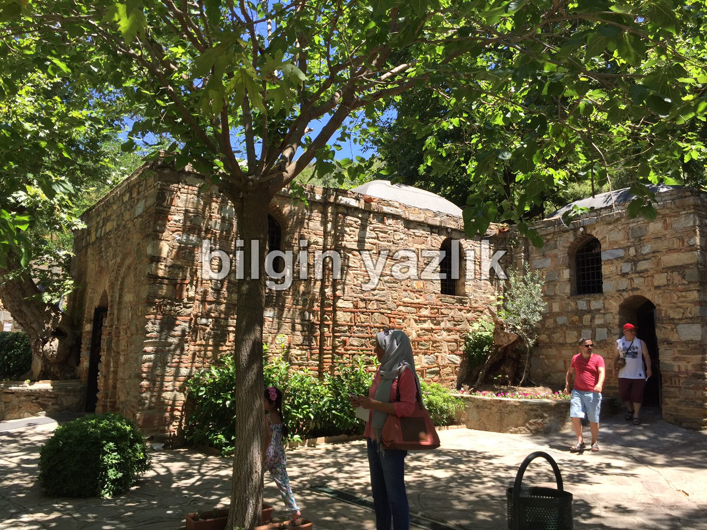
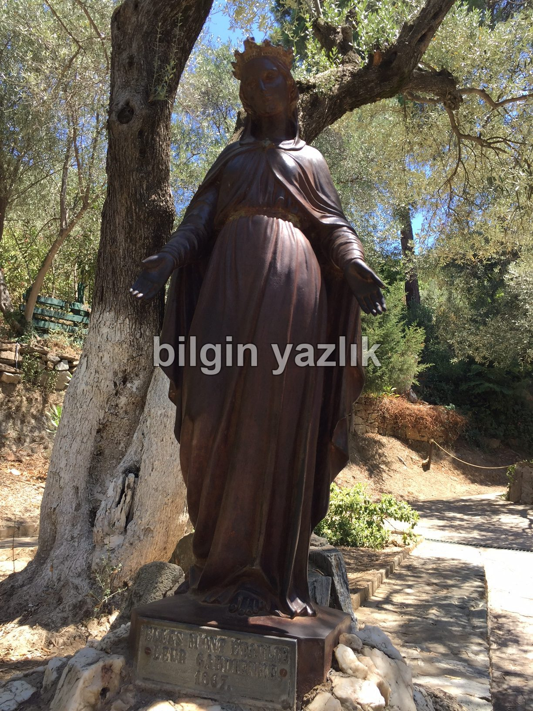

Van Gölü Havzası · 31 Ağustos 2016
Meryem Ana Evi
Meryem Ana Evi’ne yaptığımız ziyaretten notlar:
- Efes’i gezdikten sonra tabelaları takip ederek rahatça bulabilirsiniz.
- Ev, hakim bir tepenin en üstünde yer alıyor.
- Burası bir ev, yazılanlara göre Hz. Meryem’in burada bir dönem ikamet ettiği bildiriliyor.
- Ev içerisinde fotoğraf çekmek yasak, sürekli güvenlik bulunuyor ve içeride bir de Hristiyan din görevlisi yer alıyor.
- Ziyaret etmek için para ödemeniz gerekiyor, fakat yazılanlara göre parayı belediye alıyormuş yani evin sahibi olan vakıf herhangi bir ücret talep etmiyormuş.
- Evin içerisinde Hz. Meryem’e ait olduğu söylenen gülen bir fresk duvarda yer alıyor.
- Yeşillikler içerisinde, sessiz, sakin ve huzurlu bir ormanın içerisinde taş duvarlı küçük bir yapı burası.


Bu yazı taliyol arşivinden taşınmıştır. · özgün kayıt